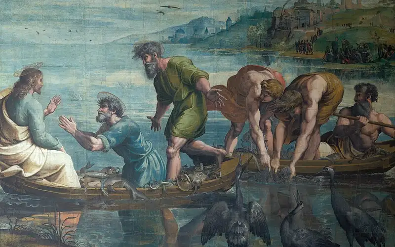
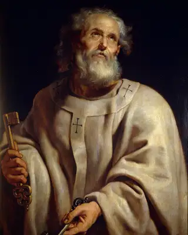
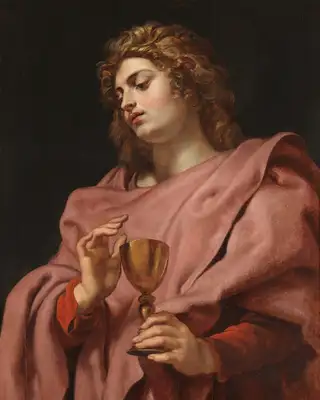
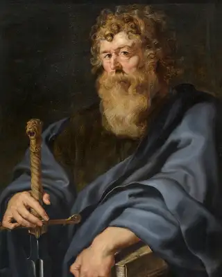

The Twelve
Twelve ordinary men. One extraordinary calling.
Learn about the men who followed Jesus Christ, witnessed His ministry, and carried His message to the world.
Meet the Apostles
Featured Apostles

Simon Peter
Fisherman
A bold fisherman who became the leading voice of the early Church.

John
Fisherman
A close witness of Christ's ministry who cared for Mary after the Crucifixion.

Paul
Tentmaker
A former persecutor whose conversion changed the course of Christian history.
Why Their Stories Matter
The apostles were not perfect men. Their stories include questions, mistakes, fear, and change. That is what makes them easy to relate to.
Follow their journey